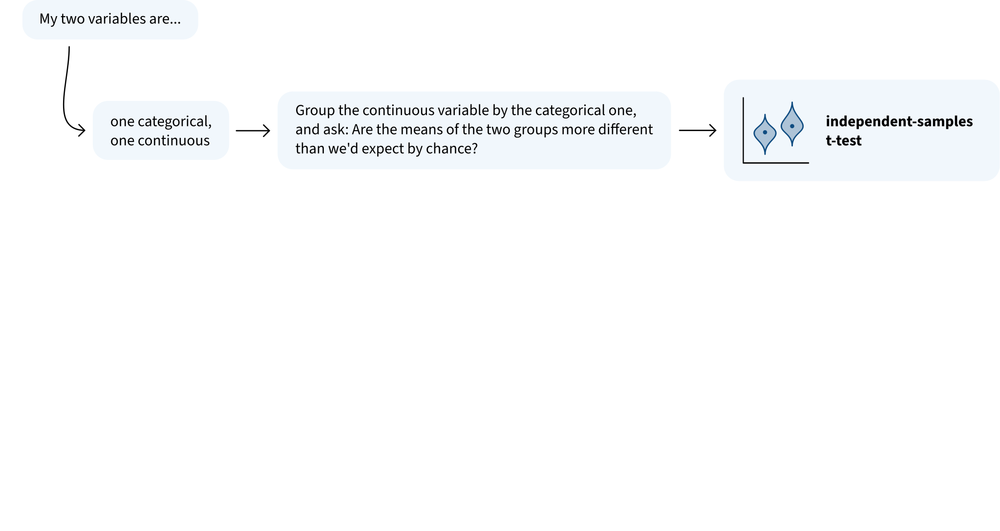
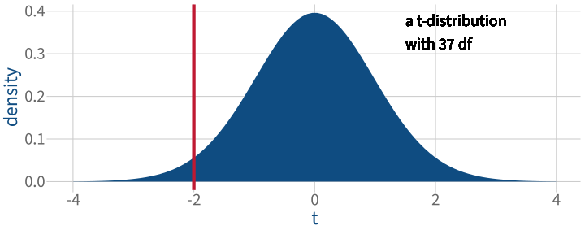

Dr. Elizabeth Pankratz (elizabeth.pankratz@ed.ac.uk)
Psychology, PPLS
University of Edinburgh
Welcome back!
This week’s learning objectives
What kind of test do we use to compare the means of two independent groups?
What does this test require/assume to be true about the data that it models?
How do we check whether we’re satisfied with the test’s assumptions?
Imagine we have paired data, where e.g. we measure the same people at two different time points. How do we analyse that data using the one-sample t-test machinery?
Where we are in the Block 3 plan

This week’s data
This week’s data: Relationship quality and stress
Researchers asked people to label their current or most recent partner relationship as “happy” or “unhappy”
→
People spent five minutes vividly imagining or remembering their relationship
→
Researchers measured the cortisol (a stress marker) in people’s saliva
Our research question (RQ): Do people with happy relationships have lower cortisol than people in unhappy ones?
RQ: Do people with happy relationships have lower cortisol than people in unhappy ones?
The null hypothesis \(H_0\) is always that there’s no difference, no effect, nothing interesting going on:
There’s no difference between the mean cortisol of people in happy relationships (\(\mu_\text{Happy}\)) and the mean cortisol of people in unhappy relationships (\(\mu_\text{Unhappy}\))
Formally:
\[
H_0 : \mu_\text{Happy} = \mu_\text{Unhappy}
\]
For the alternative hypothesis \(H_1\), we need to decide:
Is our RQ directional? (Do we expect a specific direction to the effect?)
If our RQ is directional, which alternative hypothesis matches the direction of the effect we expect to see?
\[
H_1 : \mu_\text{Happy} > \mu_\text{Unhappy}
\]
\[
H_1 : \mu_\text{Happy} < \mu_\text{Unhappy}
\]
How do we test our research question?
RQ: Do people with happy relationships have lower cortisol than people in unhappy ones?
A hypothesis test has five parts:
(1) The null hypothesis \(H_0\)
\[
H_0 : \mu_\text{Happy} = \mu_\text{Unhappy}
\]
(2) The alternative hypothesis \(H_1\)
\[
H_1 : \mu_\text{Happy} < \mu_\text{Unhappy}
\]
(3) The test statistic
For testing differences between means, we can still use the t-statistic.
The t-statistic measures how many SEs away from zero the observed difference between means is.
It answers the question: How much does the observed difference between means differ from what we would expect if the H0 were true?
(4) The significance level \(\alpha\)
What % of the time do we accept that we will incorrectly reject the H0, even if it is actually true? (Typically \(\alpha = .05\).)
(5) The p-value
Assuming the H0 is true, how probable is it that we would obtain a test statistic at least as extreme as the one we calculated in Step 3?
Independent-samples t-test in R
Runs Steps 3, 4, 5:
stress_t <-t.test( stress_data$cortisol ~ stress_data$relationship, # asks: how is `cortisol` different for each value of `relationship`# cortisol is the "dependent variable"alternative ="less", # the direction of H1: mean(happy) is less than mean(unhappy)mu =0, # the difference we'd expect between groups if H0 were truevar.equal =TRUE, # related to assumptions – we'll come back to this!conf.level = .95# .95 because our alpha level is .05, and confidence level is 1 – alpha)
Interpreting the test results
stress_t
Two Sample t-test
data: stress_data$cortisol by stress_data$relationship
t = -2, df = 37, p-value = 0.04
alternative hypothesis: true difference in means between group Happy and group Unhappy is less than 0
95 percent confidence interval:
-Inf -0.00492
sample estimates:
mean in group Happy mean in group Unhappy
0.147 0.200

Note about how categories are ordered
You might have noticed that we wrote our H1 as
\[
\mu_\text{Happy} < \mu_\text{Unhappy}
\]
and not as
\[
\mu_\text{Unhappy} > \mu_\text{Happy}
\]
Why?
Because by default, R will compare categories in alphabetical order.
So the category that comes first alphabetically should also come first in our H0 and H1.
This guarantees that we’ll choose the right direction for our one-sided tests!
Only alternative = "less" runs the test we actually want.
How to report an independent-samples t-test
Some additional descriptive statistics
We’ll need to compute the mean and SD of each group’s cortisol.
We’ll also need a count of how many people were in each group.
# A tibble: 2 x 4
relationship M SD N
<chr> <dbl> <dbl> <int>
1 Happy 0.147 0.0779 19
2 Unhappy 0.200 0.0974 20
How to report an independent-samples t-test
To find out whether people in happy relationships have lower cortisol than people in unhappy relationships, we ran an independent-samples t-test with \(\alpha\) = .05. We found a significant difference between the cortisol in the happy relationship group (\(N\) = 19, \(M\) = 0.15, \(SD\) = 0.08) and the unhappy relationship group (\(N\) = 20, \(M\) = 0.20, \(SD\) = 0.10): cortisol was significantly lower for people in happy relationships (\(t\)(37) = –2, \(p\) = 0.04, one-tailed).
APA notation format for reporting the key inferential values:
\(t\)([degrees of freedom]) = [t-statistic], \(p\) = [p-value], [one-tailed/two-tailed]
What the independent-samples t-test requires / assumes about the data
What the independent-samples t-test requires / assumes about the data
Data requirements:
The dependent variable is numeric.
Assumption of independence:
The obtained sample data are a random sample from the population of interest, both within and across groups.
Assumption of normality:
EITHER the population for each group follows a normal distribution OR each group’s sample size \(\geq\) 30.
Assumption of equal variance:
The population variance is the same for both groups.
What if one or more of these things isn’t true?
Then you shouldn’t use an independent-samples t-test to analyse your data.
A common alternative that makes fewer assumptions is the “Welch’s t-test”. (We aren’t covering it in DAPR, so you don’t need to know anything more about it than this!)
For a specific kind of non-independence, there’s a trick that I’ll show you at the end of this lecture.
How do we check each requirement/assumption?
Data requirements for the independent-samples t-test
The dependent variable is numeric.
Look at the data and make sure that the variable we’re analysing represents interval, ratio, or integer data.
Shapiro-Wilk normality test
data: pull(filter(stress_data, relationship == "Unhappy"), cortisol)
W = 0.9, p-value = 0.2
Are you satisfied that this assumption is met via normal distribution of the sample?
Equal variance assumption for the independent-samples t-test
The population variance is the same for both groups.
We test whether the population variances in the two groups are equal using something called the F-test.
The F-test is a hypothesis test where:
\(H_0\): The population variances are equal
\(H_1\): The population variances are not equal
We don’t want to reject this H0, so we want a non-significant result!
F-test for equal variance
var.test( stress_data$cortisol ~ stress_data$relationship, ratio =1)
F test to compare two variances
data: stress_data$cortisol by stress_data$relationship
F = 0.6, num df = 18, denom df = 19, p-value = 0.3
alternative hypothesis: true ratio of variances is not equal to 1
95 percent confidence interval:
0.251 1.648
sample estimates:
ratio of variances
0.64
Why ratio = 1? If variances are equal (say they’re both 25), then the ratio of variances equals 1:
We ran an F-test against the null hypothesis that the populations that each group was sampled from have equal variance. Based on the sample, we could not reject the null hypothesis of equal variances in the population (\(F\)(18, 19) = 0.6, \(p\) = .3).
APA notation format for F-test of equal variance:
\(F\)([numerator degrees of freedom], [denominator degrees of freedom]) = [F-statistic], \(p\) = [p-value]
A final note: How to analyse non-independent samples
One example of non-independent samples
Researchers measured the cortisol in people’s saliva before the experiment
→
People spent five minutes vividly imagining or remembering a happy relationship
→
Researchers measured the cortisol in people’s saliva again
RQ: Does cortisol decrease after imagining a happy relationship?
stress_data2 |>pivot_wider(names_from = time, # values of `time` become new column namesvalues_from = cortisol # values of `cortisol` become the column contents ) |>head()
stress_data2 |>pivot_wider(names_from = time, # values of `time` become new column namesvalues_from = cortisol # values of `cortisol` become the column contents ) |>mutate(cortisol_diff = t2 - t1 ) |>head()
One Sample t-test
data: stress_data2_wide$cortisol_diff
t = -0.7, df = 18, p-value = 0.2
alternative hypothesis: true mean is less than 0
95 percent confidence interval:
-Inf 0.0306
sample estimates:
mean of x
-0.0225
We fail to reject the H0 that there’s no difference in cortisol before and after imagining a happy relationship. In other words, we find no evidence that thinking about a happy relationship reduces salivary cortisol (\(t\)(18) = –0.7, \(p\) = 0.2, one-sided).
What questions do you have right now?
Back matter
Revisiting this week’s learning objectives (1)
What kind of test do we use to compare the means of two independent groups?
an independent samples t-test
What does this test require/assume to be true about the data that it models?
dependent variable is numeric
each group’s variable is normally distributed OR each group’s size >= 30
observations are sampled independently, both within and across groups
population variance is the same in both groups
How do we check whether we’re satisfied with the test’s assumptions?
check that variable is on interval/ratio/integer scale
visually with plots (histogram, density plot, Q-Q plot), statistically with Shapiro-Wilk
check that each individual belongs to only one group and has only one observation in the group they belong to
test statistically with F-test
Revisiting this week’s learning objectives (2)
Imagine we have paired data, where, e.g., we measure the same people at two different time points. How do we analyse that data using the one-sample t-test machinery?
Collapse the two samples into one sample by subtracting the value in one sample from the value in the other: then the sample contains the differences between the original two samples.
Compare that sample of differences to 0.
Block 3 skills involved in this week’s lecture and/or workshop
V3: I can appropriately describe patterns of data shown in a plot.
V4: I can appropriately plot associations between two variables.
A6: I can implement a given statistical test.
A4: I can check the assumptions underlying basic statistical tests.
I5: I can identify whether I can or cannot reject the null hypothesis.
I7: I can define appropriate null and alternative hypotheses for a given research question.
C1: I can describe the steps taken in a given analysis.
C2: I can describe in writing the results of a given basic statistical test.
P5: I can wrangle/modify data as required for the given analysis task.
P6: I can identify what data wrangling/modifications are required for a given analysis task.